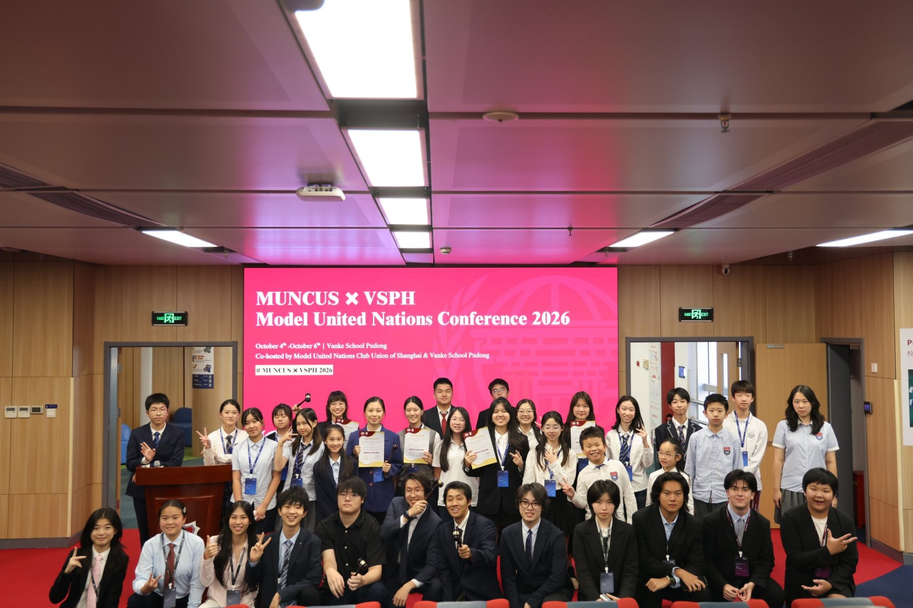
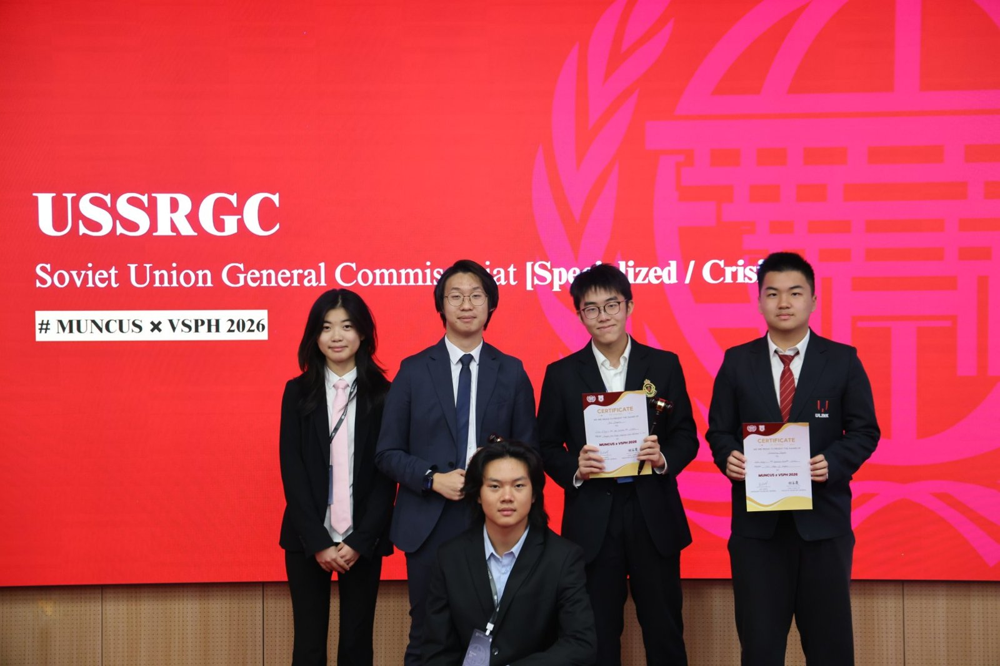
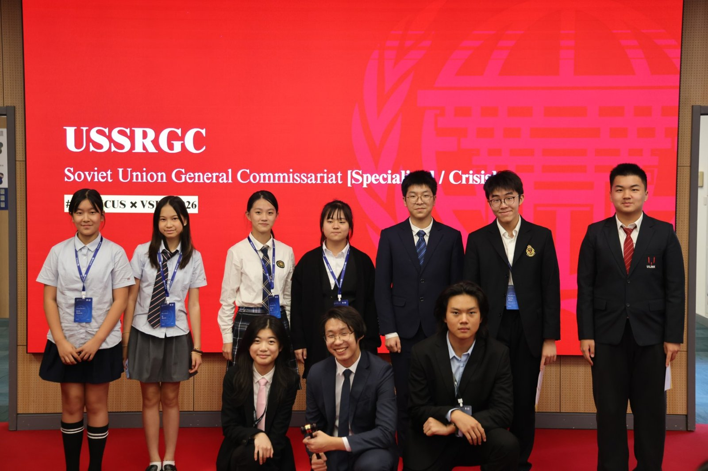
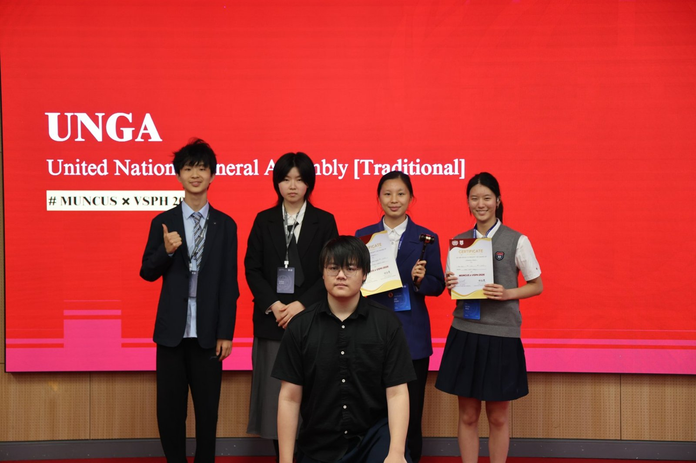
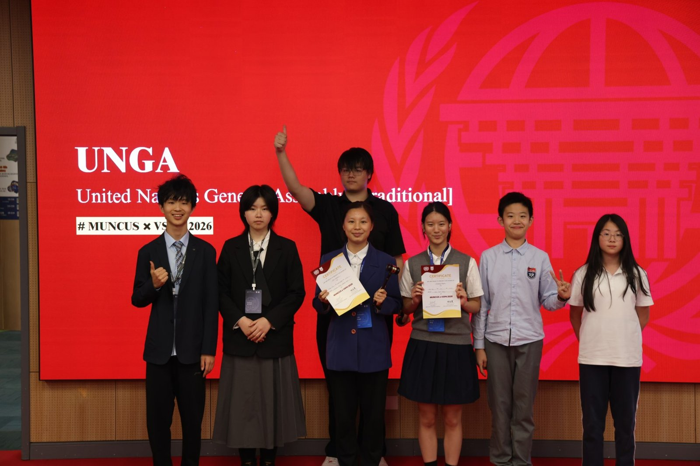
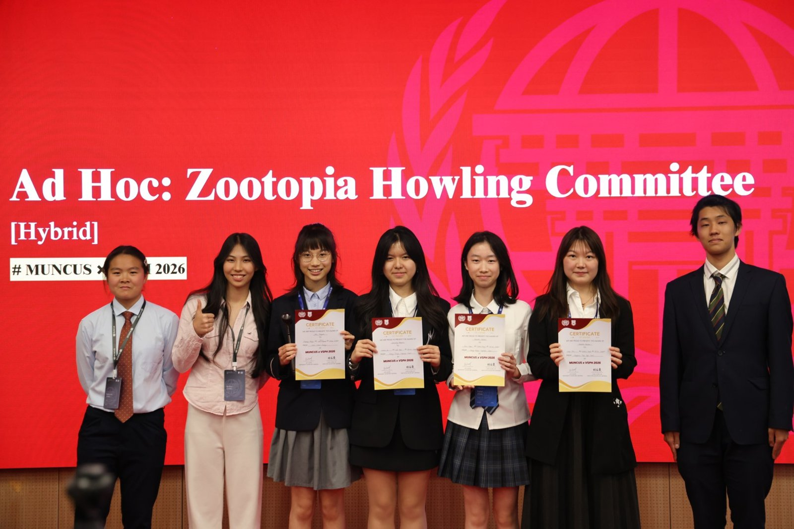
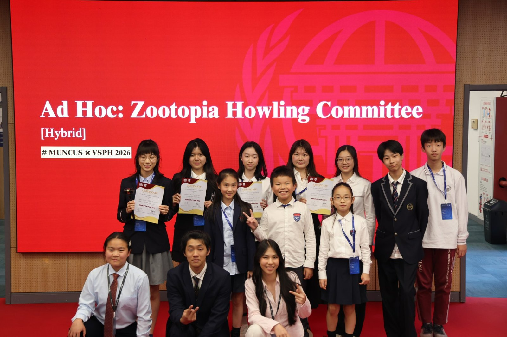
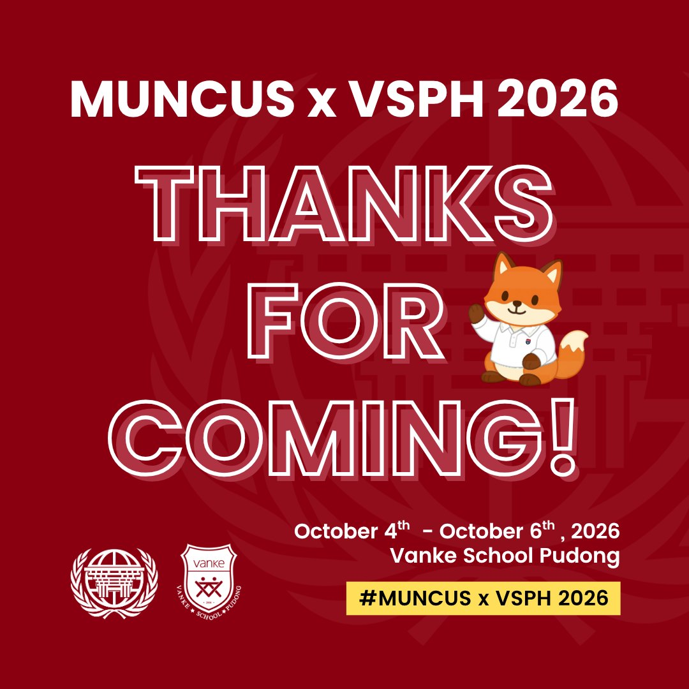

From October 4 to 6, 2026, delegates from schools across Shanghai and beyond gathered at Vanke School Pudong for MUNCUS x VSPH 2026, the second edition of the conference co-hosted by the Model United Nations Club Union of Shanghai and Vanke School Pudong.
Across three committees, the Soviet Union General Commissariat (USSRGC), the United Nations General Assembly (UNGA) and the Ad Hoc: Zootopia Howling Committee, delegates negotiated, drafted and responded to crisis over three days. At the closing ceremony, the dais teams recognized the delegates below.

Award Winners
Soviet Union General Commissariat (USSRGC)
- Best DelegateIgor KurchatovZihao WangShanghai East Foreign Language School Affiliated to SISU
- Outstanding DelegateVyacheslav MolotovAnzhe WangUlink College of Shanghai


United Nations General Assembly (UNGA)
- Best DelegateUnited KingdomJingqi ZouGuangzhou Foreign Language School
- Outstanding DelegateIranShiqi YuanVanke School Pudong


Ad Hoc: Zootopia Howling Committee
- Best DelegateCaptain Felix FirehoundQiuyang ZhangVanke School Pudong
- Outstanding DelegateChief BogoLinxuan XuPudong Foreign Languages School
- Honorable MentionGideon GreyZihan YangPudong Foreign Languages School
- Honorable MentionIsabella L. BexleeLanqi ShanChangchun Shiyi High School



About MUNCUS
上海模拟联合国社团联盟（MUNCUS）致力于连接上海地区模联社团，搭建资源共享与交流平台，为更多青少年提供与世界交流的机会。
The Model United Nations Club Union of Shanghai connects MUN clubs across Shanghai, building a platform for sharing resources and exchange, and giving more young people the chance to engage with the world.
To inspire the next generation.
Originally published on the MUNCUS WeChat official account. Read on WeChat →